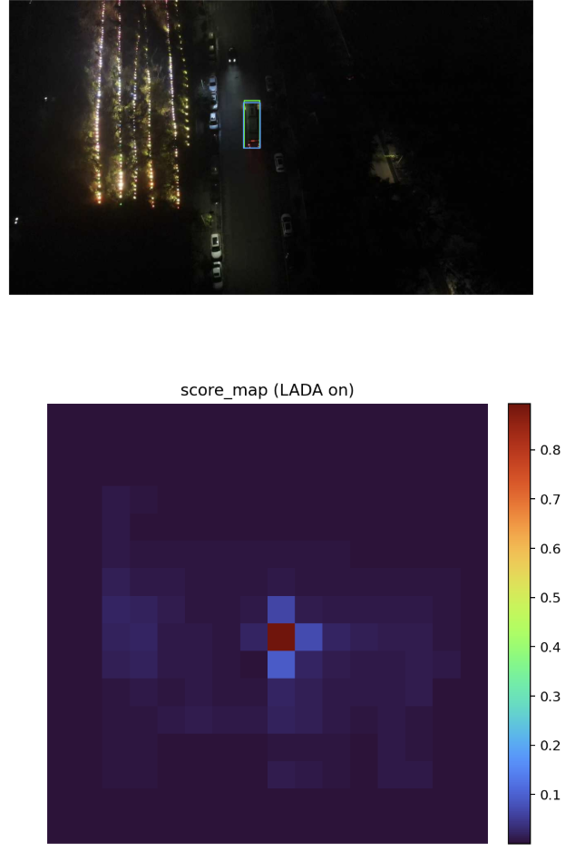
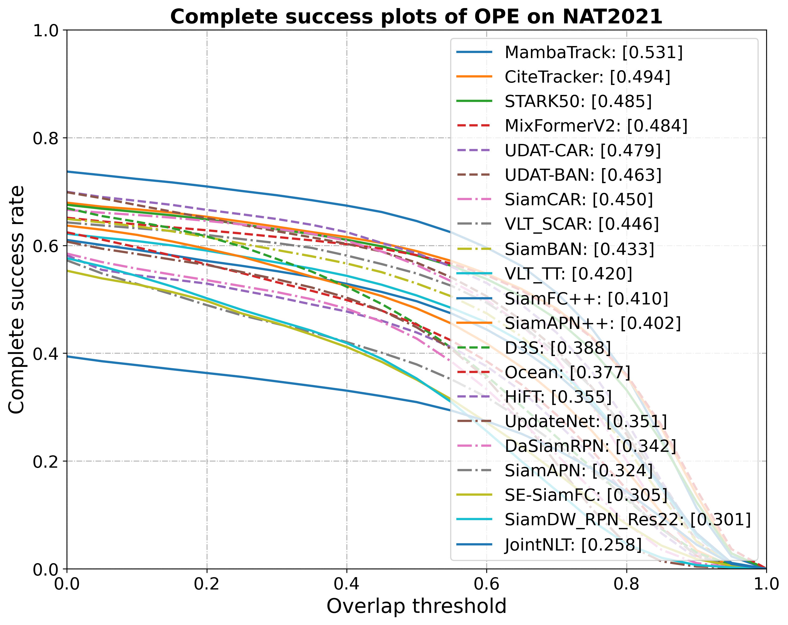
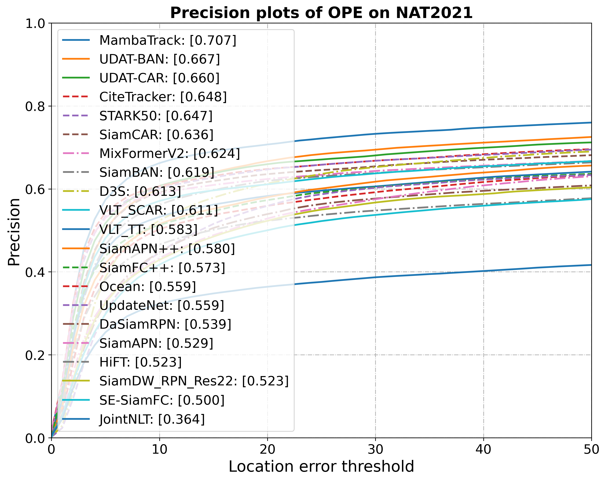
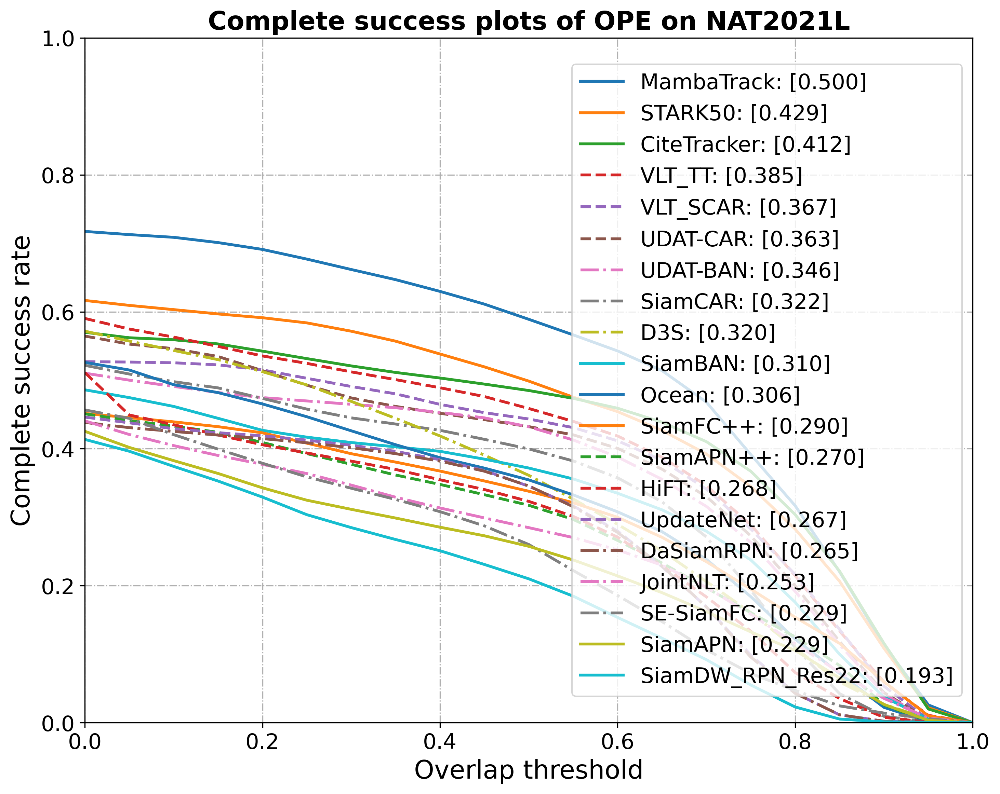
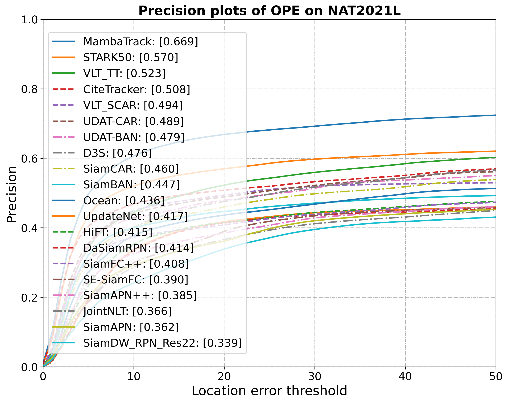

<div class="middle center"> <div style="width: 100%"> # 工作汇报 <hr></hr> [王倓](https://github.com/Mandorian) 2026.04.14 </div> </div> <!--s--> <div class="middle center"> <div style="width: 100%"> # 后处理 </div> </div> <!--s--> <div class="middle center"> <div style="width: 100%"> # 动态模版更新 </div> </div> <!--v--> ## 动态模版更新 + $v_{tasr}=\left|tasr_{mean}-EMA\left(tasr_{mean}\right)\right|$ + $v_{color}=D_B(hist_{ref},hist_{cur})=\mathbf{-ln}\left(\sum \sqrt{hist_{ref}\times hist_{cur}}\right)$ + $v_{size}=\left|\log\left(area+\epsilon\right)-\log\left(EMA\left(area\right)+\epsilon\right)\right|$ + $v_{iou}=1-iou$ + $v_{app}=1-sim_{app}$ $EMA$平滑处理$EMA_t = \beta\ EMA_{t-1} + (1-\beta) x_t$,实验中$\beta=0.8$。总波动分数$V = 0.20v_{tasr} + 0.20v_{app} + 0.20v_{color} + 0.20v_{size} + 0.20v_{iou}$ - 若$V \ge T\_{HIGH}=0.35$：硬更新计数+1，达到`HARD_CONFIRM_FRAMES=2`后硬更新 - 若$0.20 \le V < 0.35$：软更新 - 若$V < 0.20$：无更新 软更新：$z_{new}=(1-\eta)z_{old}+\eta z_{cand},\quad \eta=0.2$ <!--s--> <div class="middle center"> <div style="width: 100%"> # 动态搜索区域 </div> </div> <!--v--> ## 动态搜索区域 <div class="mul-cols"> <div class="col"> 衡量峰值是否明显高于周围噪声。越高越好，表示目标峰更突出、定位更可靠。 $$ PSR=\frac{peak-\mu_{side}}{\sigma_{side}+\epsilon} $$ 衡量响应图是否“尖锐且干净”。越高越好，表示主峰集中、背景能量低 $$ APCE=\frac{\left(peak-\min\left(R\right)\right)^2}{\mathbb{E}\left[\left(R-\min\left(R\right)\right)^2\right]+\epsilon} $$ $$ \begin{aligned} Q=&0.45\times PSR_n + 0.40\times APCE_n + 0.15\times(1-Var_n) \\\\ &S_{target}=S_{base}+G(1-Q), G=1.4, S_{base}=4.0 \end{aligned} $$ </div> <div class="col"> <p></p> </div> </div> <!--s--> <div class="middle center"> <div style="width: 100%"> # 结果 </div> </div> <!--v--> ## 结果 <div class="mul-cols"> <div class="col"> <p></p> </div> <div class="col"> <p></p> </div> </div> <div class="mul-cols"> <div class="col"> <p></p> </div> <div class="col"> <p></p> </div> </div>